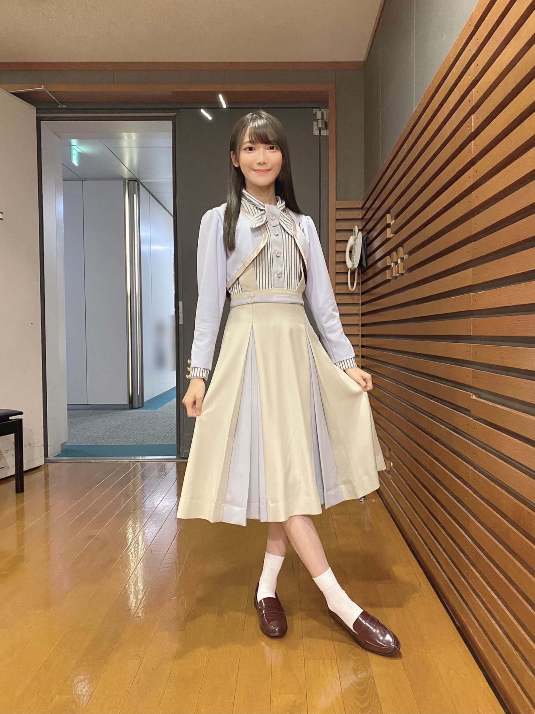

2020/1118Wed冬のあしおと ☺︎ 黒見明香(16)
寒いね〜！週の真ん中、今日も一日お疲れ様でした✩︎⡱
ココを見つけてくださり ありがとうございます♪
乃木坂46 新４期生の黒見明香です。
すこーしだけ自己紹介させてください☺︎
♪:*:･･:*:･･:*:･･:*:･･:*:･･:*:･♪:*:･･:*:･･:*:･･:*:･･:*:･･:*:･♪
黒見 明香（くろみ はるか）
2004年1月19日生まれ 16才
香港生まれ・東京都出身です
あだ名： くろみん・黒見ちゃん
3の倍数9・6・3(くろみ)
と覚えてもらえたら嬉しいです♪
＊
↓頂いたコメントから
♪:*:･･:*:･･:*:･･:*:･･:*:･･:*:･♪:*:･･:*:･･:*:･･:*:･･:*:･･:*:･♪


＊
⚫︎奈於ちゃんのブログを読んで...くろみんも、何かライブの公約!?して欲しいな～、なんて。ウィンクとか...期待しちゃっても良いですか？(笑)
⚫︎今日、乃木坂新聞、ゲットしたんです！黒見ちゃんの色紙応募しました！「明」黒見ちゃんっぽくてめっちゃ好き。

わたしも、いつも小さい時から学校でも、
クラスで一番最後まで立ってて、
見かねた隣の子がプリント裏返して...
⚫︎猫舌SRをご覧になった後、みり愛さんに連絡送りましたか？
なぜご存知なのでしょうー！？笑
◎本日から、和田まあやさんご出演の、
読んでくださり、本当にありがとうございます☺︎
次回も、会えたら嬉しいなぁ✨
またねヾ(･ω･*)
くろみはるか☺︎
☆ 本日のあなたのラッキーナンバー：❺ と ❶
♪:*:･･:*:･･:*:･･:*:･･:*:･･:*:･♪:*:･･:*:･･:*:･･:*:･･:*:･･:*:･♪
・
・
・
＜ちょこっとアンコール♬笑＞
〜クロミ・ル・フィーユ〜
♬ *。♩*。♬
⚫︎もしかしたら笑顔しか見たことないかも！くろみんって怒ることあるの？？
⚫︎個人ブログ始まったら、更新日は３の倍数のいつの日か！あと、、他には9.6.3が1の位に入った日に更新とか︎︎！そんなこんなでこんな案出してみたりして
⚫︎クロ ← くろみ
⚫︎クロミーユっていうファンの総称は、とっても素敵です!
私は気に入りました！私もクロミーユだ！
○モバメなど始まったらまたぜひ、大切な皆んなのお名前もお話ししようねーヾ(･ω･*)o
⚫︎乃木坂の制服と歌衣装で着てみたいものを、それぞれいくつまででも構いません。
これを質問するのは10回目くらいになるので今度こそ答えてくれると嬉しいです
●体が温まる食べ物と言ったら何かな〜？♡
鍋はもちろん、肉まん、ピザまんもホッとするよね♪
肉まん 三国志の 諸葛亮（孔明）が発明したという説もあって
いつも食べる時に
「孔明先生ありがとうございます☺︎」
って思ってしまってるよ笑
＊
⚫︎三国志の赤壁の戦いの場所になった赤壁に行った事ある？
社会科の資料集笑や、映画、ドラマで見ただけで、行ったことないのー！
好きなSteady&Co.さん、福山雅治さん、中島みゆきさん、BOØWYさん・氷室京介さん、SEKAI NO OWARIさんのこと、宇多田ヒカルさん、PUFFYさんの歌詞のお話もありがとうございます。
ドラマどんぶり委員長や姉ちゃんの恋人のことや、試合結果、名前しりとりや図書委員のこと、ブルース・リーさんのNEW ERAのお話も、リスが作る森のエビフライや回転寿司で塩をかけたらお話し、クリスマスとサンタさんエピソード、好きな冬のお菓子、免許のお話し、
⚫︎ プロスピWSガチャ第三弾は引いた？
⚫︎くろみんはワールドスターは引きますか？それともベストナインタイトルホルダーまでエナジー貯めますか？
⚫︎OB来るまで俺も頑張ってエナジー貯めるね！
黒見ちゃんはベストナイン&タイトルホルダーまでエナジー貯めるのかな？
◯引いてないよー！
アニバーサリー60連と福袋50連してるから今は年末とかお正月に向けて貯めようかなと思ってるよ！
⚫︎ 明日からプロスピのスピチャンブロック大会始まるけどくろみんは見る？
試合はもちろんすごいけど応援大会や
動画視聴でエナジーも貰えるから時間
あったら見てみてね！
◯そうだったんだね！知らなかったよ！教えてくれてありがとう〜
◯くろみんはプロスピAで好きなイベントってありますか？
◯私もエージェントAは好きだよ！
後はスターロード、ドリームキャラバン、プロスピコロシアムが好きだよ〜！
⚫︎ プロスピはアニバも終わって選択契約書も引き、初めてのコストリーグで目標にしていた500位以内に入れたので、今はモチベが低下しています
◯コストリーグ500位すごいね！
私は選択契約書誰にするか迷っててまだ選んでないよ〜
⚫︎ プロスピでリーグオーダーやっと80000までいったよ。年内までに覇王いけるように頑張るよ
◯80000すごいね！覇王行けるように頑張って欲しいな☺︎楽しんで頑張ろうね！
⚫︎リズムゲームのコツ。皆さんが書いておられる事、参考になります。
あとは、やっぱりゲームを「楽しむ」事ですかね!
◯みんなが書いてくれてるコツを見ながら、「楽しんで」頑張ってみるね！教えてくれてありがとう☺︎
⚫︎ 乃木フェスむずかしいなぁ〜。アドバイスに書いてある事もやってるんだけども、指がついていかないのよ〜
◯アドバイスを参考にしながら楽しんでもう少し一緒に頑張って欲しいな☺︎
⚫︎ 乃木フェスのくろみんのカードゲットしましたよ
くろみんのSSR欲しくて5回くらい引いたけど出ませんでした
◯ゲットできたあなたも、ゲットできなかったあなたも引いてくれてありがとう！気持ち十分に届いてるよ！ありがとう☺︎
⚫︎ 黒見ちゃんは乃木フェスで自分当たりましたか？
◯当たってないよー！なかなかゲットできないよね、、、当たることを信じて楽しんで頑張ろうね☺︎
＜お誕生日おめでとうございます✨＞
◎ 11月20日は、掛橋沙耶香ちゃん♡のお誕生日ですね♪
ココを見つけてくださり ありがとうございます♪
乃木坂46 新４期生の黒見明香です。
すこーしだけ自己紹介させてください☺︎
♪:*:･･:*:･･:*:･･:*:･･:*:･･:*:･♪:*:･･:*:･･:*:･･:*:･･:*:･･:*:･♪
黒見 明香（くろみ はるか）
2004年1月19日生まれ 16才
香港生まれ・東京都出身です
あだ名： くろみん・黒見ちゃん
3の倍数9・6・3(くろみ)
と覚えてもらえたら嬉しいです♪
＊
↓頂いたコメントから
⚫︎小さい頃は外で泥だらけになって遊ぶ子でしたか？
⚫︎今回、新しい黒歴史がなかったのがちょっと残念でした笑
泥だらけは泥だらけなのですが、
運動神経が良くないので、
元気っぱいかけっこ！一輪車！ではなく...
幼稚園の園庭に置いてある
『犬小屋』にこもっていたそうです。。。
自分のことを犬だと思っていたのかなぁ...
祖父母宅で犬を飼っていて、
その"犬のおやつ"がすっごくおいしい✨と、
「食べてみてー！」と友達に配っていたそうです
ナゾだわん・・・Σ（ﾟдﾟll） （*よい子は真似しないでね汗）
♪:*:･･:*:･･:*:･･:*:･･:*:･･:*:･♪:*:･･:*:･･:*:･･:*:･･:*:･･:*:･♪
-:-:୨୧:-:- すっかり寒くなって、すこーし早い冬が始まっていたよ〜☺︎
【大みそかに「第71回NHK紅白歌合戦」出場決定✨】
⚫︎初出場時の記者会見での生駒ちゃんの涙から5年。それから6回連続出場は立派。
⚫︎乃木坂メンバーの頑張りの成果だと思います。
⚫︎乃木坂メンバーの頑張りの成果だと思います。
ありがたいことに、この瞬間を大切な先輩方、
大好き乃木坂と共に居てくださる皆さんと、
共有させて頂いたことがすごく嬉しいです☺︎
＊
TVや映画で繰り返し観ていた、先輩方の紅白への想い、
一丸となって築いてきて下さった、この大切な評判を引っ張ることがないよう...
少しでもグループの役に立てる人になれるよう、
日頃から一つ一つ意識して行動しなければ、
とあらためて気持ちが引き締まりましたよっ (*ˊᵕˋ*)੭
＊
出かけることがなかなか難しい年末年始かもしれないけれど、
どうぞテレビで、一緒に今年最後の日を迎えましょうね〜♡
2021はきっと、今より良い年になりますようにー♬
♬ *。♩*。♬
⚫︎ハロウィンも終わり今年、残るイベントはクリスマスといったところですね？
もう街にクリスマスツリー✨が飾られていて
びっくりしました☺︎
クリスマスも、あなたと、乃木坂のメンバーと
一緒に過ごせたら嬉しいなー✩︎⡱
＊
⚫︎くろみんのWピースが気になってブログの画像を見るのが楽しみになってます 。
だからWピース止めないで ？
撮ってもらったら、ツリーを指しているつもりだったのだけど、
やっぱりビミョーに指にピースの名残が・・・\(//∇//)\
また、よかったらわんパターンで恥ずかしいけれど、
Wピース写真も載せさせてね☺︎笑
♪:*:･･:*:･･:*:･･:*:･･:*:･･:*:･♪:*:･･:*:･･:*:･･:*:･･:*:･･:*:･♪
-:-:୨୧:-:- 胸元の46ロゴのバッチを見るたびに、ドキドキしちゃいます✩︎⡱ 笑
【 決定！26thシングル✨ 】
シングル作品として、約10ヶ月ぶりの
26thシングルが2021年1月27日に発売決定となりました〜！
＊
⚫︎乃木中を見ました。選抜発表の場にくろみんが居たのを確認したよ。
やっぱり緊張感がありましたか？
やっぱり緊張感がありましたか？
乃木坂に、パフォーマンスに懸ける切実な想いが
たくさん伝わってきて、すごく張りつめた緊張がありました。
同時に、
おめでとうと健闘を称える優しいあったかさも、
抑えきれない自分への悔しさも伝わってきて、
すごくたくさん考えさせられました。
＊
みんな乃木坂が大好きで、精一杯頑張っていて、
うまく言葉にできないのだけれど、
一人一人が幸せであってほしいな、と思いました。
本当に大切な瞬間でした。
＊
もちろん、応援してくださっている、
共に坂を上ってくださっている皆んなが
一つでも笑っていて欲しい。
乃木坂を聴いたり、応援したりすることで
少しでも癒されたり、楽しい気持ちになってくれたら、
どんなに嬉しいことだろう...とより強く感じています(*´-`)
♬ *。♩*。♬
⚫︎レイちゃんと真佑ちゃん初選抜そして山下美月さんも初センターおめでとうだね☺️
真っ直ぐて努力を重ねていらっしゃる意志も、お姿も美しい憧れの山下美月さん♡
太陽のような明るくてパワーをくれる大好きな清宮レイちゃん♡
さりげない優しさがカッコ良くて、プロ意識も尊敬している憧れのお姉さん田村真佑ちゃん♡
本当におめでとうございます (*ˊᵕˋ*)੭
26枚目のシングルも本当に楽しみです！
最高の楽曲がお届けできますように・・✨
♬ *。♩*。♬
⚫︎くろみんたち新４期生にとって初のCDでの作品だね？
⚫︎ 緊張することは大事なこと。日村さんも選抜発表で震える与田ちゃんに「緊張できなくなったら終わりだからね」と言っていました。
大切なアドバイスありがとう☺︎
ドキドキしますが、愛される作品になりますように...精一杯頑張ります✩︎
楽しみにしててくださいねー！
♬ *。♩*。♬
⚫︎これから先、選抜発表を含めて色んな経験をするだろうけど。
後悔しないようにいつも全力で活動していかないとっ、覚悟はいい？
いつも全力を懸けて(. ≧ω≦)ﾉ
後悔ないよう、一つ一つの活動を大切に頑張ります！
どうぞ、いろいろ迷ったり、悩んだり、
犬小屋にこもったり(?)迷走する日もあるかもしれないけれど...
皆んなの存在が心強いです✨
一緒に、上ってくれたら嬉しいな((〃ω〃))
♬ *。♩*。♬
⚫︎久しぶりの「１３日の金曜日」乃木坂ファンにとっては「何かが起こる」と楽しみにしていました。
⚫︎久しぶりの「１３日の金曜日」乃木坂ファンにとっては「何かが起こる」と楽しみにしていました。
⚫︎なんか怖い日ってイメージだったけど、乃木坂46を好きになってからはゆったんの顔が浮かぶようになって、凄く明るくて楽しい日に感じれるようになりました。
26thシングルの報告ができて、嬉しかったです✩︎⡱
「13日の金曜日」斉藤優里さん♡の笑顔も本当に可愛くて、
楽しくなっちゃう素敵な曲ですよね！
昔、小学校の担任の先生が、13日(金)怖い話をするので、寝れなくなっちゃから、ずっと耳を塞いでいました。。。
中学生になって、乃木坂のおかげで、
私も大丈夫になりましたよ〜 (*ˊᵕˋ*)੭ 笑
＊
⚫︎銀杏並木は神宮だね！紫一色のサイリウムの景色、あの小さな一つの光だったくろみん♡
神宮球場に立てる日を待っていますよ！
まだ色づく前の早朝に、神宮球場周辺をお散歩しに
お出かけしてきました(*´-`)
気付いてくださってありがとうございます！
わたしには、心の目で、明治神宮球場が掲げてくださった
「まいやん ９年間お疲れ様でした！」
の垂れ幕が、しっかり見えました☺︎笑
♪:*:･･:*:･･:*:･･:*:･･:*:･･:*:･♪:*:･･:*:･･:*:･･:*:･･:*:･･:*:･♪

-:-:୨୧:-:- 新しい制服でぴょんぴょん喜んでいたら、さぁちゃんと奈於ちゃんが次々と「撮ってあげよ〜か♡笑」と声をかけてくれたんだよ〜☺︎
【 乃木坂46 4期生ライブ2020✨ 】
⚫︎4期生ライブ、本当に楽しみだよーオンラインだからできる演出とかもあると思うし、今は辛抱だね、、いつか直接声援送れる日を待ってます！
初めて！直接！お顔を見れる日がすっごーーく待ち遠しいですが、
16人で力を合わせて、全力で楽しい時間をお届けします (*ˊᵕˋ*)੭
ぜひ、楽しみにしてて下さいね✩︎⡱
⚫︎奈於ちゃんのブログを読んで...くろみんも、何かライブの公約!?して欲しいな～、なんて。ウィンクとか...期待しちゃっても良いですか？(笑)
ライブ直前のブログに読んでくださってるあなたに分かる"公約"載せますね！乞うご期待！？、ですよ〜☺︎
♬ *。♩*。♬
⚫︎今日、乃木坂新聞、ゲットしたんです！黒見ちゃんの色紙応募しました！「明」黒見ちゃんっぽくてめっちゃ好き。
手に入れて下さって、ありがとうございますー✨
「乃木坂46結成10年目の意気込み」を全メンバー44人が漢字１文字で綴らせていただきました〜！
はるか(明香)の名前から、
『 明けの明星のように、皆んなの明日が今日より明るい一日となりますように...全力で頑張ります☺︎✨』
という願いを込めて、書かせていただきました〜ヾ(･ω･*)o
＊
⚫︎ 乃木坂新聞のサイン色紙、くろみんサイン良いね。963と矢印♡これに決定したのかな？
矢印の先が、つんつんする剣の意味も込めました((〃ω〃))
どこかで見かけてくれたら嬉しいな✨
♪:*:･･:*:･･:*:･･:*:･･:*:･･:*:･♪:*:･･:*:･･:*:･･:*:･･:*:･･:*:･♪
-:-:୨୧:-:- ベランダのお花は、嬉しい日も、寂しい日も、元気をもらえる癒しの存在だよ〜☺︎
ベランダで育てていた『ハート型のトマト』を
全部食べちゃって寂しくなっていたプランター。。。
冬の寒さに強いパンジーが咲き始めたよ〜 (*ˊᵕˋ*)੭
＊
花言葉は・・・
紫のパンジーは「思慮深い」
黄色のパンジーの花言葉は「つつましい幸せ」
アプリコットのパンジーの花言葉は「天真爛漫」
毎日いろいろと頑張っていたり、しんどかったりするアナタに、
少しでもパンジーの癒しパワー✨が届いたら嬉しいなぁ。。(*´-`)
♬ *。♩*。♬
⚫︎ 自分は何をやってもすぐに上手くいくことがほとんど無くて、人一倍努力してやっと人並みにこなせるタイプの人間なので。くろみんの一言一言が心に刺さるんだと思います。
わたしも、いつも小さい時から学校でも、
「出来た人から座ってください！」という時に、
クラスで一番最後まで立ってて、
見かねた隣の子がプリント裏返して...
こっそり答え教えてくれたり...。
いつもビリのかけっこで
ゴールできる前に撤収が始まってたり...
と、どうにも遅くて、先生に
『人の3倍かかるから、人の10倍努力しないと駄目だよ』
と教えて貰ってきたタイプです(*´-`)
（一緒にしちゃってごめんね！汗）
＊
みり愛さん♡純奈さん♡と大切な先輩方にも
心配をおかけしてしまって、とても申し訳なく思っています汗
でも、たとえ遅くても、
自分の精一杯で頑張っていたら、
心もお姿も美しい憧れの先輩方、
こうして乃木坂を支えてくださる皆さん
と、あったかくて大好きな方に出会えたので、
それが本当に16年生きてきて一番嬉しいことです((〃ω〃))
＊
いつもありがとうございます！
わたしも一緒に頑張りを見守って応援出来たら✨って思ってるよ〜 (*ˊᵕˋ*)੭
これからも、いろんなこと一緒に乗り越えて行けたら嬉しいな♪
＊
⚫︎ 剣術の様に...みり愛さんをダンスの「お師匠様」にするというのはどうでしょうか？(笑)
ちょっと勇気を出したら、色んな事、教えてくれそうだね!
ちょっと勇気を出したら、色んな事、教えてくれそうだね!
ダンスも美しすぎるみり愛さん...
畏れ多く勿体なすぎますが、踊っていらっしゃるお姿からたくさん学ばせていただきたいです (. ≧ω≦)ﾉ
なぜご存知なのでしょうー！？笑
"一緒に頑張ろうね"とお話ししてくださって、心があったかくなって、感動していました✨
猫舌見てたよー！や感想コメントもたくさん本当にありがとうます☺︎
♬ *。♩*。♬
◎本日から、和田まあやさんご出演の、
舞台『ハイスクール！奇面組３』～危機一髪！修学旅行編～」
が上演されます〜♪
乃木坂工事中でも、女王を何度も獲得されている
可愛くて面白いすぎる✨優しい憧れの先輩です。
どんなお話が繰り広げられるのか、楽しみですね〜ヾ(･ω･*)o
♪:*:･･:*:･･:*:･･:*:･･:*:･･:*:･♪:*:･･:*:･･:*:･･:*:･･:*:･･:*:･♪
ブログやお手紙で、たくさんのコメントや感想送って下さり
本当にありがとうございます✩︎⡱
今回、初めてのコメントですー！というあなたも、
もう何百回目のコメントなんだ〜！というあなたも、
大切な時間を使ってお話しして下さり
本当にありがとうございます✨
あなたに出逢えた奇跡に、感謝しながら、
大事に、一つずつ全部読ませて頂いています((〃ω〃))
皆さんのことを知ることが出来る、
私の１日の中で『１番幸せな時間』です♩
直接お話しできる時が、 待ち遠しいです✩︎⡱
＊
寒い日が続いて、仕事や勉強が忙しかったり、
なんだか体調イマイチだよー、疲れちゃったよーって方も
本当に、お疲れ様でした✩︎⡱
きっと心も、身体も、しんどい時もあるかと思います。。
どうぞ、皆さんが 少しでも
ひとときリラックスできますように...✩︎⡱
と願っています(*´-`)
初めて会える日を、楽しみに待っています♪
＊
明日は、"璃果ちゃんのポニテが好きなんだ♡"て伝えたら
ブログやお手紙で、たくさんのコメントや感想送って下さり
本当にありがとうございます✩︎⡱
今回、初めてのコメントですー！というあなたも、
もう何百回目のコメントなんだ〜！というあなたも、
大切な時間を使ってお話しして下さり
本当にありがとうございます✨
あなたに出逢えた奇跡に、感謝しながら、
大事に、一つずつ全部読ませて頂いています((〃ω〃))
皆さんのことを知ることが出来る、
私の１日の中で『１番幸せな時間』です♩
直接お話しできる時が、 待ち遠しいです✩︎⡱
＊
寒い日が続いて、仕事や勉強が忙しかったり、
なんだか体調イマイチだよー、疲れちゃったよーって方も
本当に、お疲れ様でした✩︎⡱
きっと心も、身体も、しんどい時もあるかと思います。。
どうぞ、皆さんが 少しでも
ひとときリラックスできますように...✩︎⡱
と願っています(*´-`)
初めて会える日を、楽しみに待っています♪
＊
明日は、"璃果ちゃんのポニテが好きなんだ♡"て伝えたら
最近よくポニテをしてくれている(偶然かも！？笑)
優しい璃果お姉ちゃんですよ〜♬
読んでくださり、本当にありがとうございます☺︎
次回も、会えたら嬉しいなぁ✨
またねヾ(･ω･*)
くろみはるか☺︎
☆ 本日のあなたのラッキーナンバー：❺ と ❶
♪:*:･･:*:･･:*:･･:*:･･:*:･･:*:･♪:*:･･:*:･･:*:･･:*:･･:*:･･:*:･♪
・
・
・
＜ちょこっとアンコール♬笑＞
〜クロミ・ル・フィーユ〜
（クロ見るFeel YOU☺︎）
↑コメントありがとうー！使ってみたよー♪
♬ *。♩*。♬
ココからおまけ、すっごく長いよ〜笑
楽屋裏でお喋りしてるような感じなので、
気が向いた時にでも〜↓☺︎
♬ *。♩*。♬
⚫︎CHOOSE 5 PHOTOS!の写真めっちゃいいね！！
すごいかわいいのと、大人っぽいのと2種（顔に色気あるよ）これは買いです！笑
⚫︎カレンダー、サインのチャンスを願って、くろみんの買おうすごいかわいいのと、大人っぽいのと2種（顔に色気あるよ）これは買いです！笑
嬉しい〜(*´-`)ありがとう！
カレンダー撮影、皆んな頑張ってたので、よかったらチェックしてみてね✨
♬ *。♩*。♬
⚫︎もしかしたら笑顔しか見たことないかも！くろみんって怒ることあるの？？
○ないかもしれない...怒るよりも悲しくなっちゃうような気がするよー笑
へんな人だよね〜\(//∇//)\
♬ *。♩*。♬
⚫︎多くの人にブログが長いメンバーっていう認知のされ方してるかもしれないね！
前回のブログ 文字数えたら一万文字超えててビックリ！
♬ *。♩*。♬
⚫︎多くの人にブログが長いメンバーっていう認知のされ方してるかもしれないね！
前回のブログ 文字数えたら一万文字超えててビックリ！
○数えてくださってありがとうー！
わたしもビックリです( ꒪⌓︎꒪) !
巻物ブログ好きだよー！ってコメントもありがとう、
あーでもない、こーでもないと試行錯誤しているけれど、
こうして教えてくれるあなたがいるのが、すごく心強いし嬉しいです☺︎
♬ *。♩*。♬
あーでもない、こーでもないと試行錯誤しているけれど、
こうして教えてくれるあなたがいるのが、すごく心強いし嬉しいです☺︎
♬ *。♩*。♬
⚫︎個人ブログ始まったら、更新日は３の倍数のいつの日か！あと、、他には9.6.3が1の位に入った日に更新とか︎︎！そんなこんなでこんな案出してみたりして
それ良いアイディアですねヾ(･ω･*)o
またその日が来たら、ぜひ検討させてねー♪
♬ *。♩*。♬
ミル ← 見る
フィー ← フィー(ドバッグ)
ユ ← ユ(ー)
質問返しの コーナー タイトルには いいと思わん？ 笑 。。
フィー ← フィー(ドバッグ)
ユ ← ユ(ー)
質問返しの コーナー タイトルには いいと思わん？ 笑 。。
○ありがとうございます！
コーナータイトル使ってみました！どうかなぁ。。？笑
＊
⚫︎クロミーユっていうファンの総称は、とっても素敵です!
私は気に入りました！私もクロミーユだ！
○モバメなど始まったらまたぜひ、大切な皆んなのお名前もお話ししようねーヾ(･ω･*)o
♬ *。♩*。♬
⚫︎乃木坂の制服と歌衣装で着てみたいものを、それぞれいくつまででも構いません。
これを質問するのは10回目くらいになるので今度こそ答えてくれると嬉しいです
○何度も書いてくれててありがとうー！
たくさんありすぎて、とっても長くなっちゃったから、
次回、絶対、載せるのであと5日だけ、待っててね(*´-`)♡
♬ *。♩*。♬
♬ *。♩*。♬
♬ *。♩*。♬
⚫︎黒見ちゃんに出会ってから、乃木坂46への応援の仕方の形が、初づくしの自分ですが、そのきっかけをくれた黒見ちゃんには、感謝の気持ちでいっぱいです。
⚫︎黒見ちゃんに出会ってから、乃木坂46への応援の仕方の形が、初づくしの自分ですが、そのきっかけをくれた黒見ちゃんには、感謝の気持ちでいっぱいです。
◯わたしも乃木坂46のファンで、
お姿も心も美しい先輩方も
心がぎゅーってなる楽曲も大好きで、
乃木坂ファンの皆んなももちろん大好きなんです (*ˊᵕˋ*)੭
一緒にコールして、タオル挙げて、
近くに来たら、みんなでサイリウ合わせて応援したあげたりとか
帰りの電車でも、グッズ見つけると、密かに"仲間だっ♡今日もやっぱ乃木坂だったよね"と
心で思ったりしていました。
支えてくださる皆んなが大好きで、だから自覚とか
色々と足りないことが多いけれど、、
あなたとこうやって会いたいなっていう気持ちを分かち合ったり、
嬉しい気持ちを一緒にできるのが
すっごくすっごく嬉しいです((〃ω〃))
言葉が下手で、ごめんね。
伝わると良いなぁ。。。
だから一緒に幸せいっぱいつくろうねー！
♬ *。♩*。♬
お姿も心も美しい先輩方も
心がぎゅーってなる楽曲も大好きで、
乃木坂ファンの皆んなももちろん大好きなんです (*ˊᵕˋ*)੭
一緒にコールして、タオル挙げて、
近くに来たら、みんなでサイリウ合わせて応援したあげたりとか
帰りの電車でも、グッズ見つけると、密かに"仲間だっ♡今日もやっぱ乃木坂だったよね"と
心で思ったりしていました。
支えてくださる皆んなが大好きで、だから自覚とか
色々と足りないことが多いけれど、、
あなたとこうやって会いたいなっていう気持ちを分かち合ったり、
嬉しい気持ちを一緒にできるのが
すっごくすっごく嬉しいです((〃ω〃))
言葉が下手で、ごめんね。
伝わると良いなぁ。。。
だから一緒に幸せいっぱいつくろうねー！
♬ *。♩*。♬
⚫︎くろみんはお歌の方はどう？なんかあったら、聞かせて欲しいな。
○研修生時代に「真っ直ぐ響く声が好きだよ」と
○研修生時代に「真っ直ぐ響く声が好きだよ」と
美佑ちゃんが褒めてくれた言葉がすごく心に残っていて...
気持ちが伝わるよう、大切に歌っていきたいなーて思っているよー！
♬ *。♩*。♬
くろみちゃんは肉まんとあんまんどっちが好き〜？
○どっちも大好きだよー(*´-`)
良く食べるのがピザまんだよー！笑
●体が温まる食べ物と言ったら何かな〜？♡
鍋はもちろん、肉まん、ピザまんもホッとするよね♪
肉まん 三国志の 諸葛亮（孔明）が発明したという説もあって
いつも食べる時に
「孔明先生ありがとうございます☺︎」
って思ってしまってるよ笑
＊
⚫︎三国志の赤壁の戦いの場所になった赤壁に行った事ある？
社会科の資料集笑や、映画、ドラマで見ただけで、行ったことないのー！
本当に赤いのか、とってもみてみたいなー☺︎
♬ *。♩*。♬
好きなSteady&Co.さん、福山雅治さん、中島みゆきさん、BOØWYさん・氷室京介さん、SEKAI NO OWARIさんのこと、宇多田ヒカルさん、PUFFYさんの歌詞のお話もありがとうございます。
ドラマどんぶり委員長や姉ちゃんの恋人のことや、試合結果、名前しりとりや図書委員のこと、ブルース・リーさんのNEW ERAのお話も、リスが作る森のエビフライや回転寿司で塩をかけたらお話し、クリスマスとサンタさんエピソード、好きな冬のお菓子、免許のお話し、
もありがとうございます☺︎
テスト勉強や課題頑張ってるよー！卒業製作で受賞したよ、深夜バイト頑張ってるよ、医学部目指して頑張ってるよー、資格試験頑張ったよー！バイトでミスしたけど頑張ってる、というお話も伝えてくれてありがとう。応援しているよー！ファイトーヾ(･ω･*)o
バースデーライブや研修生ツアーの思い出、しし座流星群の流れ星や宇宙の黒は本当は薄い肌色なんだよ、というお話、鬼滅の刃のお話も(無限列車見れたよー）ありがとう☺︎
寒くなってきて身体しんどいよー、風邪気味だよーという皆さん、どうぞ早めに寝れたら、あったかくして熟睡できますように✩︎⡱
♬ *。♩*。♬
＜ゲームコーナー✨＞
プレイしてない皆んな、ごめんだよ〜><
⚫︎ プロスピWSガチャ第三弾は引いた？
⚫︎くろみんはワールドスターは引きますか？それともベストナインタイトルホルダーまでエナジー貯めますか？
⚫︎OB来るまで俺も頑張ってエナジー貯めるね！
黒見ちゃんはベストナイン&タイトルホルダーまでエナジー貯めるのかな？
◯引いてないよー！
アニバーサリー60連と福袋50連してるから今は年末とかお正月に向けて貯めようかなと思ってるよ！
⚫︎ 明日からプロスピのスピチャンブロック大会始まるけどくろみんは見る？
試合はもちろんすごいけど応援大会や
動画視聴でエナジーも貰えるから時間
あったら見てみてね！
◯そうだったんだね！知らなかったよ！教えてくれてありがとう〜
◯くろみんはプロスピAで好きなイベントってありますか？
◯私もエージェントAは好きだよ！
後はスターロード、ドリームキャラバン、プロスピコロシアムが好きだよ〜！
⚫︎ プロスピはアニバも終わって選択契約書も引き、初めてのコストリーグで目標にしていた500位以内に入れたので、今はモチベが低下しています
◯コストリーグ500位すごいね！
私は選択契約書誰にするか迷っててまだ選んでないよ〜
⚫︎ プロスピでリーグオーダーやっと80000までいったよ。年内までに覇王いけるように頑張るよ
◯80000すごいね！覇王行けるように頑張って欲しいな☺︎楽しんで頑張ろうね！
⚫︎リズムゲームのコツ。皆さんが書いておられる事、参考になります。
あとは、やっぱりゲームを「楽しむ」事ですかね!
◯みんなが書いてくれてるコツを見ながら、「楽しんで」頑張ってみるね！教えてくれてありがとう☺︎
⚫︎ 乃木フェスむずかしいなぁ〜。アドバイスに書いてある事もやってるんだけども、指がついていかないのよ〜
◯アドバイスを参考にしながら楽しんでもう少し一緒に頑張って欲しいな☺︎
⚫︎ 乃木フェスのくろみんのカードゲットしましたよ
くろみんのSSR欲しくて5回くらい引いたけど出ませんでした
◯ゲットできたあなたも、ゲットできなかったあなたも引いてくれてありがとう！気持ち十分に届いてるよ！ありがとう☺︎
⚫︎ 黒見ちゃんは乃木フェスで自分当たりましたか？
◯当たってないよー！なかなかゲットできないよね、、、当たることを信じて楽しんで頑張ろうね☺︎
♬ *。♩*。♬
＜お誕生日おめでとうございます✨＞
◎ 11月20日は、掛橋沙耶香ちゃん♡のお誕生日ですね♪
明るい笑顔と、いつも意識が高くて努力を重ねている強くて真っ直ぐな心。
ギターを弾いているかっこいい姿も大好きなさぁちゃんの誕生日です。
おめでとうございます！どうぞ楽しい一年になりますように✩︎⡱
そして、お誕生日を迎えるあなたへ・・
✨HAPPY BIRTHDAY✨
どうぞ素敵な一年になりますよう✩︎⡱
♪:*:･･:*:･･:*:･･:*:･･:*:･･:*:･♪:*:･･:*:･･:*:･･:*:･･:*:･･:*:･♪
ここまで読んでくださったアナタ、ほんとうにありがとう♡
またねヾ(･ω･*)
そして、お誕生日を迎えるあなたへ・・
✨HAPPY BIRTHDAY✨
どうぞ素敵な一年になりますよう✩︎⡱
♪:*:･･:*:･･:*:･･:*:･･:*:･･:*:･♪:*:･･:*:･･:*:･･:*:･･:*:･･:*:･♪
ここまで読んでくださったアナタ、ほんとうにありがとう♡
またねヾ(･ω･*)
2020/11/18 18:06

PROFILE
新4期生リレー
202104
| SUN | MON | TUE | WED | THU | FRI | SAT |
|---|---|---|---|---|---|---|
| 1 | 2 | 3 | ||||
| 4 | 5 | 6 | 7 | 8 | 9 | 10 |
| 11 | 12 | 13 | 14 | 15 | 16 | 17 |
| 18 | 19 | 20 | 21 | 22 | 23 | 24 |
| 25 | 26 | 27 | 28 | 29 | 30 | |

コメント(229)
楽しみにしてたよ︎︎☺︎ 大好きだよー！
紅白楽しみだね
ワクワク〜
しゃかりき
カワイイっ！！
くろみんこんばんは！！
お疲れ様でした⁽⁽ ◟(∗ ˊωˋ ∗)◞ ⁾⁾
最近めっきりと寒くなってきたし、なかなか布団から出れない日々が続いておりますよ。 さっきインフルエンザの予防接種受けてきたんだ！ お互い体調管理しっかりとしないとね。
新制服とても似合ってていいよ♪ かわゆい♡♡
黒見ちゃんにそろそろ会いたいな～笑！！
って思ったらコロナ…( ˙-˙ )第３波だってね、、
黒見ちゃんもお体気をつけてね！
新制服の自撮り可愛い～！！！笑
とゆか、どんどん黒見ちゃん美しくなってる！！♡
♪。.:＊・゜♪。.:＊・゜♪。.:＊・゜
26thの選抜発表あったね！
私は黒見ちゃんの頑張り屋さんで素直で優しいところ。ファン想いなところ。もちろんお顔も大好きなんだけど、私は、黒見ちゃんの美しさは心にもあると思ってるよ︎︎☺︎
だからね、もしかしたらもっと悔しい想いをする時があるかもしれないんだけど、そういう時は応援しているファンがいるってことを忘れないで欲しいな︎︎☺︎ 私は黒見ちゃんの心の支えになれたら嬉しいな︎︎☺︎ 一緒に頑張ろうね！！笑
♪。.:＊・゜♪。.:＊・゜♪。.:＊・゜
私は12月7日から試験が始まります︎︎☺︎
応援してくれたら嬉しいな笑
♪。.:＊・゜♪。.:＊・゜♪。.:＊・゜
黒見ちゃん︎︎☺︎りん︎︎☺︎
こんばんは。
今日も一日お疲れ様～
ブログ更新ありがとう!!
綺麗なクリスマスツリーだね～
もちろん、くろみんも。
自分の職場の近くの駅でも、毎年イルミネーションがあるんだ～
街が色付いて、綺麗だよね。
4期生ライブ。
「公約」、めっちゃ嬉しいです(*･ω･)
ライブがより、楽しみに…本当にありがとう!
本番までもう少しだね、頑張って!!
では、またねﾉｼ
#220
昨日、今日月が可愛いですよ
ところで、、
ガチャでよくくろみんがでるの。
今回のCAガチャも生写真もくろみん
スゴいよね
中学２年生の花音と言います。
初めてのコメントです。
黒見ちゃんのブログ、毎回読んでます！
ピース姿、すごく可愛いなと思っていました。
初めましてなのに図々しいって思うかもしれませんが、もう少しで誕生日なんです。
なので黒見ちゃんにおめでとうって言ってもらいたいです。
なのでお願いできますか？？
では！
またコメントしますね。
26枚目のシングルと4期生ライブが
楽しみで仕方ないよー！
プロスピのブロック大会は見れた？
自分のコメントが役にたってよかった！
1ヶ月ぐらいは毎週開催されてるから
エナジーがたまりやすいよ！
寒くなってきたけど体調には気をつけてね！
ワンピースめっちゃかわいい。！おしゃれすぎる
本日のラッキーナンバーってブログ更新から
6時間程度しかその日残ってないよねぇ……。
( ・∇・)
氣志團のsecret love storyです。
この曲の後半でちょっとだけ歌ってるのが7thバスラにも出てくれた、ギタリストの星グランマニエさんです。
実はボーカルの綾小路翔さんよりも上手だったりします。
聴いてくれると嬉しいです。
コメント、失礼します！
ブログ更新、ありがとう！
犬のおやつって食べたことがないんだけど、どんな味何ですかね？
しかもそれを周りに勧めちゃうのが面白い笑笑
6年連続での紅白出場、おめでとうだよね！
1回目の出場の時とはかなりメンバーも変わってしまっているけど、それでも出場を続けられるのは皆の頑張りだと自分も思います。
例年は全員出演だけど、今年もくろみんを含めて全員を見れるんですかね？
コロナの影響もあるし、いつもとは演出が違うかもしれないけど、何れにしろ楽しみだなー。
ややWピース写真もありがとう！
もう街にはクリスマスツリーが飾ってるんだー。
イルミネーションとかを見ると何となく心踊るよね。
同時にそれを1人で見てる事実に虚しくもなるけど笑笑
クリスマスに何か乃木坂で企画して欲しいです笑笑
それでは、この辺で。
おやすくろみんー
今年も紅白出場おめでとう！！
ほんまにありがたいよね。
一年最後の日まで、メンバーのパフォーマンスを見れるのは嬉しい。一年の締めは紅白に限る。
今年は全員でれるかなぁ。
紅白に出てるくろみん見てみたい！
楽しみにしてます。
くろみんってブログ書くのにどれぐらいかかってる？
いつも色んなこと書いてくれるから、めっちゃ大変やと思うねんけど笑
くろみんの頑張りがめっちゃ伝わる！！
いつもありがとう。
くろみんのブログ、ファン目線で書かれてるから読んでて面白いんよ！
さすがは乃木坂ファン出身。笑
これからも楽しみにしてるね。
ではでは体調には気をつけて。
次のブログも待ってます。
いつもありがとう。
今度ワンちゃんのコスプレしてみてほしいなあ（笑）
くろみん飼う(*´ω｀*)♡♡♡（笑）
おーー、綺麗な写真だな
そしてめちゃピースにならないように手が頑張ってる(*´ω｀*)♡（笑）
紅白出演おめでとう
今回も全員登場してほしいよ(｡>﹏<｡)
やっぱり自分もピース感がある自覚あるよね（笑）
でもくろみんのお手々と指は綺麗だから、どんな形でも好きだよ(*´ω｀*)♡
また犬小屋にこもったら、今度放置するかも（笑）
今回のシングルは新4期生として初だよね
先輩と一緒に作品作りできてるか？どんな作品になるかっはまだ分からないけど、
もっともっと皆と距離縮めて仲良くなってほしいよ(*´ω｀*)
小学校の先生は子どもたちに怖い話するって許せないよ（●｀ε´●）
新制服全身姿ありがたい(*´ω｀*)♡
今度ぴょんぴょんしてる瞬間も写真とってほしいよ(*´ω｀*)
本当に4期生ライブ楽しみだよ＼(^o^)／
今回は新4期生5人だけのパフォーマンスもあるかな～？
つんつんする剣可愛い(*´ω｀*)♡
パンジーのカラー、くろみんならば多分アプリコット色かな？
天真爛漫(*´ω｀*)♡♡♡（笑）
くろみんは努力してるならば全然良いと思うよ
周りの子達もサポートするから(/･ω･)/
やっぱりみり愛たんに連絡したよね＼(^o^)／今後ももっと絡んでほしいよ(*´ω｀*)
あれれ？りかちゃんのポニーテールはもしかして？（笑）
見た～～い(*´ω｀*)
くろみんの歌声は凄く聴きたいよ(｡>﹏<｡)
さやかちゃんといえば、この後るなぴと一緒に猫舌SRやるよ＼(^o^)／
くろみんも早く来てほしいなあ
よーし、ぎりぎり間に合ってくろみんのブログ全部読んだよ＼(^o^)／
これからも頑張って(/･ω･)/
４期生ライブと黒見ちゃんのライブ公約、今から楽しみに待っています。
冬に強くて癒やしパワーがあるって教えてもらったので、パンジー買って飾ろうかな！
肉まん食べるたび諸葛亮孔明先生にありがとうをいえる黒見ちゃん素敵で、私も見習いたいです。
今日も黒見ちゃんの暖かいブログを読めて幸せでしたよ
！
それでは、黒見ちゃん体調に気をつけて頑張って下さいね！
え！？犬のお菓子食べてたなんてすごいね！無事でよかったよ笑
めちゃくちゃ26枚目シングル楽しみなんだよ！
もう、楽しみなことが盛りだくさんって感じ！
その前にある紅白も楽しみにしてるよ〜！
やっぱり大晦日は年越し蕎麦を食べていましたか？
おせちも最高だよね！((お腹すいてきた笑
新制服の靴は茶色なんだね！全体含め良い色合いだと思う！
乃木坂の衣装は身長関係なく、床からスカートの高さが全員同じで綺麗ってのも知ってるからそれも楽しみに待ってる！ あ、26枚目のジャケ写も衣装も楽しみすぎる。
楽しみばっかり言っててごめんね、もちろん今もとっても楽しいです！
え！！そんな人の何倍頑張れとか酷いこという先生いたの？
どれくらい頑張るかはその人が決めるし比べたらいけないこともあるから黒見ちゃんらしく頑張るのを期待してます！
自分らしくが一番だよね！応援してます！
まいやんの卒コンのリハの時
みり愛ちゃんからみて黒見ちゃんが風に吹かれて今にも倒れそうで、みり愛ちゃんが遠くから黒見ちゃんにわからないぐらいでごりごり体育の先生みたいに黒見！黒見！頑張れ！おい！黒見！黒見！ってエールを送ってたエピソードと一緒に
みり愛ちゃんが「黒見ちゃんと勝手に仲良いと思ってる」って言ってたの面白かったし良い話だなって思った！！
みり愛ちゃんをよろしく笑
なんか二人のコンビ楽しみ！
自分は長い文読むのあんまり好きじゃない物が多かったり
本とかも好き嫌いが出てくるけど、
黒見ちゃんのブログは長くてもすごく読み応えがあって好きです！
それに、たくさん文を書くのってすごく楽しいよね！
自分もわかるよ！すごく楽しい！
しかも黒見ちゃんに伝わると嬉しいなぁって思ったりもしてるからなおさら！笑
とっても良いブログをありがとう！
体調とか帰り道とか行き道とかの道とか食べ物の消費期限？とかいろいろお気をつけて！
お元気で！
お疲れ様＆ブログありがとう！
微妙なダブルピース（笑）
それはさておき、本当に、可愛い！
4期生、ライブ、楽しみに、しています！
くろみんらしく、元気に、パフォーマンスしているところを観たです！よろしく！
それから紅白も、おめでとう！
いつも、ブログで、元気をもらってます。ありがとう！
はーちゃん（おがちゃん）
乃木坂46モバイルでは黒見ちゃんと今回は初センターに選ばれた美月さんを推しメン指定しています。黒見ちゃんは人を見る目がありますね。美月さんは真っ直ぐに努力を続けていると思います。飛鳥さんがインタビューで言ってましたが、美月さんは外の仕事でも、現場の方々にとても明るく丁寧に接して、空気を良くしているそうです。結果的に乃木坂46の評判を高めているのでしょうね。去年の3.4期合同ライブでも中心になってましたね。やはり飛鳥さんが美月さんの事を芸能人に『なるべくしてなった人』と表現してましたが、その通りだと思いました。黒見ちゃんを推したのは、ファンを大切にする人だと感じたからです。いつか選抜に、そして福神に、フロントに、センターに立てる事を祈ってます。
くろみちゃんは本当にいい子なんだろうなって
毎回ブログ読んで思う。。
色によって花言葉が違う。
とっても良いですよね。
私は勿忘草が好きです。
ドイツ名は
vergissmeinnicht
（私を忘れないで）
英名は
forget-me-not
と、直訳された名前で
日本でも同じく
忘れな草や勿忘草
と名づけられていて
どこの言葉でも同じ意味
の名前をもっていて
大好きです。
少し前にしし座流星群の
活動がピークでした。
空を見上げるも残念
ながら星をひとつ
見つけだけでした。
黒見さんの美しい瞳には
流星は見えていたので
しょうか。
幼少期など黒見さんはサンタさんに
どんなプレゼントのお願いを
していましたか。
今年は何をお願いするの
でしょう。
ステキなクリスマスを
過ごせる事を願って
おります。
乃木坂46紅白出場おめでとう！
素敵なブログありがとう(^^)/
大きなツリーだね、感動。
毎年12月には握手会があって
１年納めの感じがあったけど
今年は残念です。
でも、ライブあるから！
楽しみにしています。
神宮のコメント拾ってくれてありがとう(^^)/
大学時代から、外苑は大切な思い出の場所です。
写真のすぐ裏辺りにある
秩父宮ラグビー場にもよく行きました。
乃木坂が大きなライブを成功させてきて
神宮には、新しい、違った思いが
たくさん増えているよ！
新制服だ！
ローファーは茶色なんだね。
選抜発表は大切な儀式だからね
これからも何度も経験するだろうけど
先輩たちだって「慣れない」ってよく言ってる。
それでも、周りをよく見ていて
称えあう気持ちをちゃんと勉強して、考えている。
くろみん、しっかりしているなと思うし
やっぱり乃木坂46への愛がホンモノだなと思うよ。
ギュッと寒くなったと思ったら
今日は夏日手前の気温になって
体調を崩しました。
くろみんも、気をつけて。
努力、感謝、笑顔。
ずっと応援しています。
では、きっとまた。
おやすみ
浪速の商人（あきんど）
早速レベマにして編成に入れてる！
話変わってプロスピの自チームどこにしてる？
それとキャプテンは誰にしてる？
次の投稿待ってるね！
紅白出場おめでとう！！選抜発表お疲れ様✨
今日11月18日はミッキーとミニーの誕生日です！！
コロナが怖くてなかなか外に行けないけどお祝いしたよ〜
●黒見ちゃんはディズニーとかって行きますか？？
早く会いたいな〜
年末まで忙しいと思うけど体に気をつけて頑張ってね！！
チャァオ〜〜〜!☆彡
くろみんの〜〜〜
戦闘力は、いくつですかぁ〜〜〜❔❤️❤️❤️笑顔
(＠＾▽゜＠）ゞ❤️❤️❤️
❇️❇️おすまし！⚜️❇️⭐彡
新しい制服とっても似合ってて可愛い！ こっちも気分が幸せになったよー！
黒見ちゃんは璃果ちゃんのポニテが好きって言ってたけど、黒見ちゃんのポニテの写真も見たいなぁー！ ぜひお願いします！
ブログ更新ありがとうございました。 次回の更新も楽しみにしています。 ありがとうございました。
質問
好きなお笑い芸人さんはいますか？
最近よく二度寝しちゃうんだけど、やめるためにはどうしたらいいかな？
こんばんはー☺
今夜ご飯食べながらスキッツみてましたー。
ノギサガプラス自分もやってみたいなー(笑)(笑)
与田ちゃんのあのようなキャラクターも滅多に見れないと思うからとても良かったです！スキッツだから見れるからだからスキッツ好きなんだよね☺️
しりとりもノリノリで見ました(笑)
途中んで終わるのとかめちゃめちゃ面白い(笑)
また来週も楽しみにしてます！
改めて
紅白出場おめでとう❗今年１年とても活動がしにくい状況だけど皆が頑張って活動してきてくれた結果だと思うよ！今年の最後皆のパフォーマンスが見れるの楽しみにしてます☺️
ただ昨日コメント書いたけど
年末仕事でリアルタイムでは見れないのは残念です(T-T)ちなみに年越しは仕事中だから電車の中だよー。
くろみん
今回もコメント拾ってくれて本当にありがとね！
４期生ライブも本当に楽しみにしてます☺️
公約も何なのかしっかりブログチェックするね！
それでは
またコメントするね☺️
ログを書くには、毎日コメントを読んで
少しずつ書き溜めなきゃできない文章量
だものね。
コロナでイベントが出来ない中、ファン
との意思疎通の方法は数少ないけど、
くろみちゃんはそれをわかって、ブログ
に誠心誠意向き合ってるよう。
乃木坂であることの自覚と、何が自分に
出来ることなのかを考え、自分なりに努
力し続けるって凄い事。
最年少組なのに、考え方がしっかりして
ます。くろみちゃんの名前のように、
乃木坂の未来は明るい。
今回も読み応えのあるブログをありがとうっ。
確かにくろみんってダブルピースのイメージあるわぁ。
キラキラした笑顔でダブルピースしてるイメージ。
わーい！くろみちゃんのブログ更新の日だ！⭐︎
今日も幸せをありがとう〜〜♡
新制服スゴい似合ってる！カワイイ( ˘͈ ᵕ ˘͈ )
そして26枚目のシングル発売おめでとう～(^^♪
今回も素敵な作品なんだろうな〜と、今からとても楽しみです♡
明日は苦手な科目の試験があるの(；_；)
でも、最後まで諦めずに頑張ってくるね(^-^)/
くろみちゃんのブログ読んで頑張ろうって思えたし！
最後に質問です！
〇オススメの保湿グッズがあったら教えて欲しいです！
お顔の乾燥が最近ひどいので〜(；_；)
いつかくろみちゃんと直接お話することを夢見てます( ˘ᵕ˘ )♡
また次のブログも楽しみにしてるねー！❁.
紅白歌合戦おめでとう！
いい年末になりそう！！
シングルも楽しみ
私も昔から人より倍かかるからくろみんの言葉刺さるな。
愛媛県在住 中３女子 音より
追伸：今日も一日お疲れ様！
選抜発表も経験して、
乃木坂としての通過儀礼が増えていくね。
今日は質問２連続～～
もうすぐぐらんぶるの
Blu-rayでるけど、黒見ちゃんみた？？
いつかは新4期五人のユニットも
みたいけど、もし五人で歌うなら
何を歌ってみたい？？
ではではまたね～
コメントする